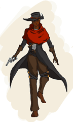
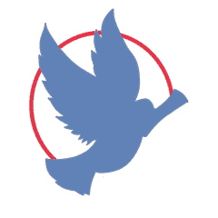

An animated walk cycle of a 3D character I made in MAYA. His name is Proto. 2024.
Archive West. A vision in progress. A Game Design Document for an original narrative-driven adventure game set in a retro-futuristic world. This project began as a collaborative university assignment, where I spearheaded the core concept, lore, and mechanics. Though currently in the design phase, Archive West reflects my passion for immersive storytelling, environmental worldbuilding, and systemic gameplay - a project I hope to develop further in the future. 2023
See the full document hereCharacter design. This character's name is Collet, she was designed for a tabletop RPG game. Created on ProCreate. 2025.
Logo Design. This logo was designed for a fictional corporation in the tabletop RPG Cyberpunk RED. Created on Krita. 2022.
